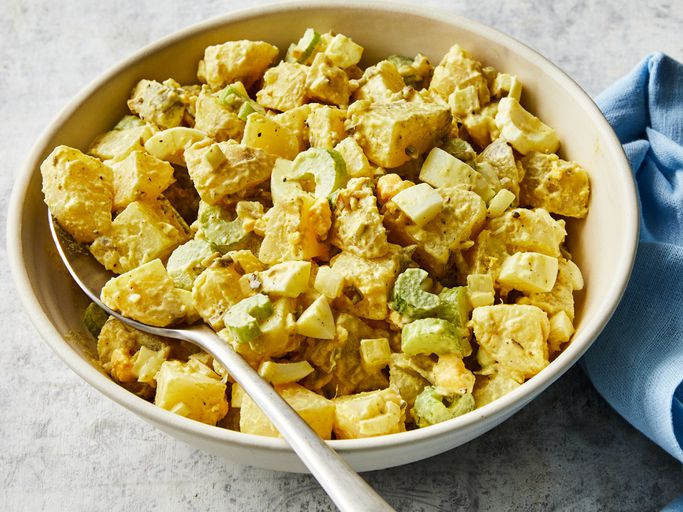

<!DOCTYPE html>
<html lang="en">
<head>
  <meta charset="UTF-8">
  <meta name="viewport" content="width=device-width, initial-scale=1.0">
  <title>Old Fashioned Potato Salad</title>
  <link href="../style.css" rel="stylesheet">
</head>
<body>
  
</body>
</html>
<h1 class="h1">Old-Fashioned Potato Salad</h1>

<h2 class="h2">The Best Potato Salad in the World</h2>
  <p class="par">Make this delicious potato salad for a special occasion 
    or for every day lunches.</p>
    <p class="par">This <bold>potato salad</bold> recipe will never let you down and is super simple to make,
         from pro to beginner this <em>recipe</em> will be your go to whenever you need that yum yum in your tum tum
    </p>
      <h3 class="h3">Ingredients</h3>
        <ul class="list">
          <li>1 kg potatoes</li>
          <li>1 cup mayonnaise</li>
          <li>1 ½ tablespoons white pepper</li>
          <li>1 ½ teaspoons mustard</li>
          <li>2 tablespoons melted butter</li>
          <li>½ cup chopped onion</li>
        </ul>
      <h3 class="h3">Steps</h3>
        <ol class="list">
          <li><strong>Step 1</strong> <p>
            Boil your potatoes till fully cooked</li></p>
          <li><strong>Step 2</strong> <p>
            Mix all other ingredients in a separate bowl.</li></p>
          <li><strong>Step 2</strong> <p>
            Mix in your potatoes and salt to taste.</li></p>
        </ol>